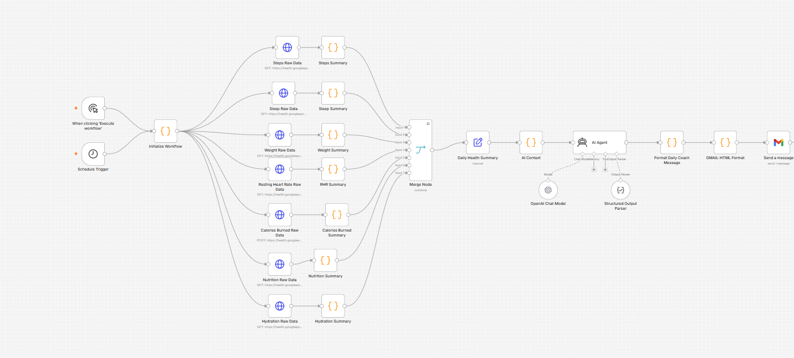
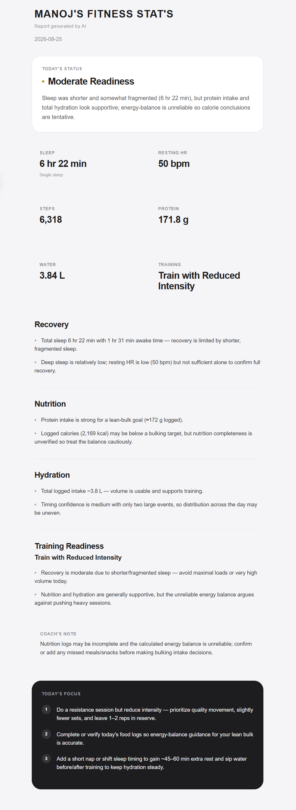

Version 1.0
My first AI agent is designed to collect health data, transform it into reliable daily context, and generate personalized coaching based on recovery, activity, nutrition, hydration, and body metrics.
Collects health data from Google Health APIs, processes the raw information through dedicated summary nodes, builds AI-ready context, and produces personalized daily fitness coaching.
COLLECT
Retrieves health information from connected
data sources for the selected health report date.
TRANSFORM
Raw API responses are processed by dedicated
Summary nodes that filter, validate, aggregate,
and normalize the data.
UNDERSTAND
The processed metrics are combined into structured
AI Context so the agent receives useful information
instead of raw API data.
COACH
The AI Agent uses that context to generate
personalized daily fitness and recovery guidance.
Sleep, Resting Heart Rate, Steps, Weight, Calories Burned, Nutrition, Protein, Hydration, and Recovery data.
SLEEP
Sleep duration and available sleep information
help provide recovery context.
RESTING HEART RATE
Resting heart rate contributes another signal
when evaluating daily recovery.
ACTIVITY
Steps and calories burned provide information
about daily movement and activity load.
BODY METRICS
Weight data is included while also considering
when the measurement was recorded.
NUTRITION & PROTEIN
Logged food and protein intake support nutrition
analysis while accounting for data completeness.
HYDRATION
Water intake is evaluated using both total volume
and meaningful hydration timing.
The agent considers data quality, manual sleep, split sleep, weight freshness, hydration timing, nutrition completeness, and recovery signals before generating recommendations.
DATA QUALITY
The system considers whether available information
is reliable enough to support a confident conclusion.
SLEEP CONTEXT
The reasoning layer can account for manual sleep
and split sleep instead of assuming every record
represents one complete sleep period.
WEIGHT FRESHNESS
Weight measurements are evaluated relative to
the health report's target date.
HYDRATION TIMING
Closely grouped hydration logs can be clustered
into meaningful drinking events instead of being
treated as completely separate hydration opportunities.
NUTRITION COMPLETENESS
Nutrition and energy-balance conclusions are treated
cautiously when the available food data may
be incomplete.
A structured AI coaching report containing recovery insights, nutrition guidance, hydration analysis, training readiness, and focused recommendations for the day.
DAILY STATUS
A high-level interpretation of the day's
overall readiness.
RECOVERY
Coaching based on sleep, recovery signals,
and available supporting health data.
NUTRITION
Guidance based on logged nutrition,
protein intake, and available energy information.
HYDRATION
Evaluation of total water intake and how
hydration was distributed across the day.
TRAINING READINESS
A recommendation for how aggressively or
conservatively to approach training.
TODAY'S FOCUS
A short set of practical actions generated
for the day.
Google Health API → n8n Data Pipeline → Summary Nodes → AI Context → AI Agent → HTML Email Report
01 — COLLECT
Google Health APIs retrieve the raw health data
used by the Fitness AI Agent.
02 — PROCESS
Dedicated Summary nodes filter, validate,
aggregate, and normalize the raw health data.
03 — BUILD CONTEXT
The AI Context layer combines processed metrics
into structured information for AI reasoning.
04 — REASON
The AI Agent evaluates recovery, sleep, activity,
nutrition, hydration, body metrics,
and data quality.
05 — DELIVER
The final coaching response is transformed
into an HTML fitness report and delivered
automatically.
Future versions will introduce historical trends, workout intelligence, deeper recovery analysis, long-term coaching memory, dashboards, and cloud infrastructure.
HISTORICAL TRENDS
Move beyond single-day analysis by comparing
health and performance patterns across longer periods.
WORKOUT INTELLIGENCE
Introduce deeper workout information so coaching
can consider training history and
exercise-specific context.
LONG-TERM MEMORY
Allow future versions of the agent to reason
using relevant historical context instead of
treating every day independently.
DASHBOARDS
Build visual interfaces for exploring health metrics,
AI insights, and longer-term trends.
CLOUD INFRASTRUCTURE
Evolve the system toward cloud-hosted infrastructure
as the project grows beyond the current architecture.
The Fitness AI Agent runs through an automated n8n workflow that collects health data, transforms it into structured context, sends that context through AI reasoning, and delivers a personalized daily fitness report.

Current Fitness AI Agent Version 1.0 workflow.
This is a real daily report generated by the Fitness AI Agent using health, recovery, nutrition, hydration, and activity data.
